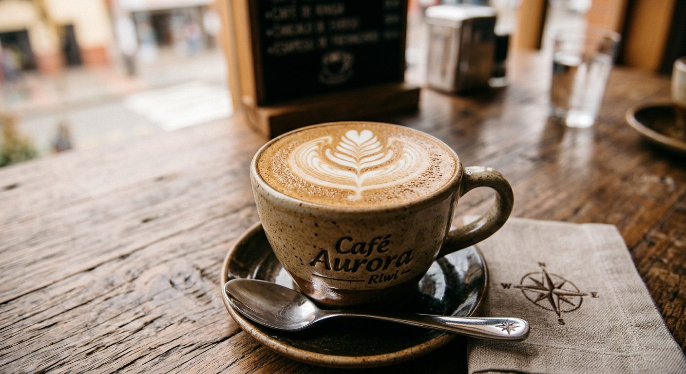
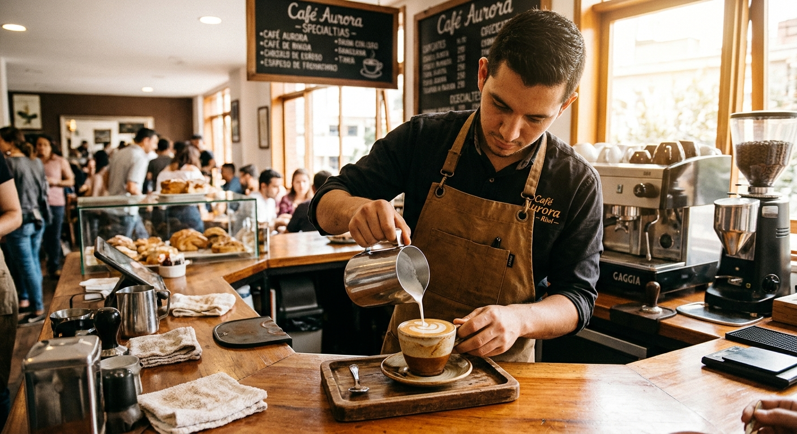
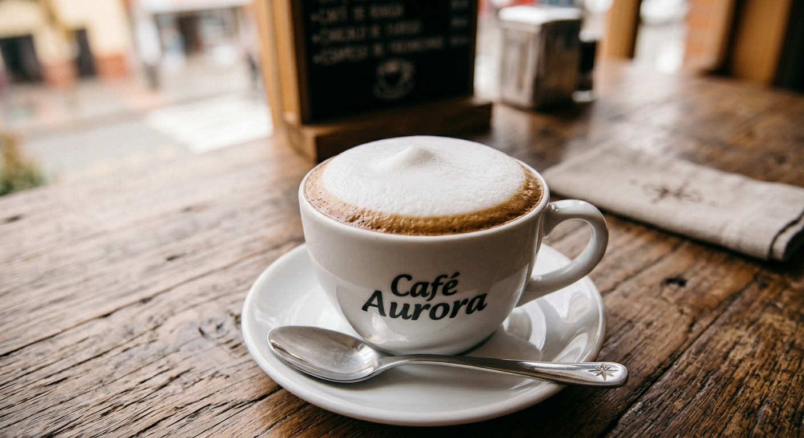
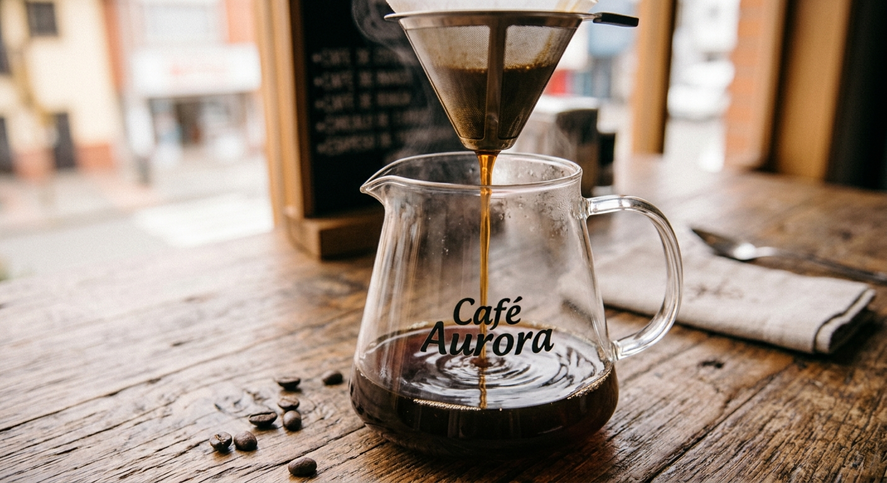

Latte de la casa
Espresso doble con leche vaporizada, preparado al momento.
Café colombiano · Medellín
Granos de fincas colombianas, preparados al momento para acompañar tu día.

Favoritos de la casa

Espresso doble con leche vaporizada, preparado al momento.

Espresso con leche y una capa generosa de espuma.

Grano de una sola finca, preparado con método de goteo.
Semana 2 · Sistemas de maquetación
Consulta la comparación del mismo layout construido con CSS propio y con grid y utilidades de Bootstrap.
Ver la comparación